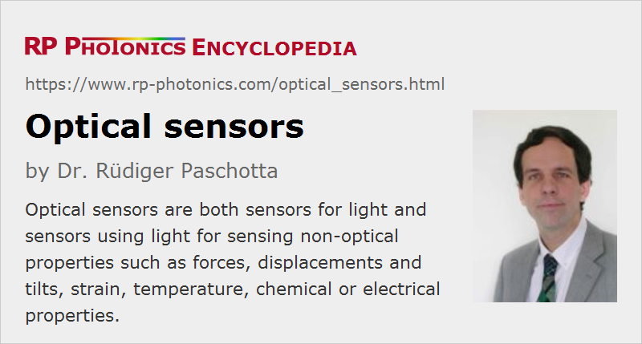

Optical Sensors
Definition: sensors based on optical principles, or sensors for light
More specific terms: optical strain sensors, optical temperature sensors, fiber-optic sensors
German: optische Sensoren
How to cite the article; suggest additional literature
Author: Dr. Rüdiger Paschotta
The term optical sensor can mean two different things:
- There are sensors for light, essentially sensing properties like an optical power or intensity.
- Other devices are sensing non-optical properties such as forces, displacements and tilts, strain, temperature, chemical or electrical properties, and somehow use light for that purpose.
Sensors for Light
Various properties of light can be addressed with certain kinds of optical sensors:
- In most cases, an optical power or intensity is sensed. For that purpose, one often uses a photodiode or some other kind of photodetector. Sometimes, however, one uses a thermal detector, where one converts the optical radiation into heat and measures the resulting temperature increase, typically with electronic means. The power or intensity sensors can be integrated into measurement instruments like optical power meters and optical power monitors.
- There are applications where one needs to sense the spatial position of a light beam. For such purposes, there are position-sensitive detectors of different kinds, some of them with extraordinarily high spatial resolution.
- Other optical sensors can test additional properties of light beams or of diffuse light, for example concerning polarization or the optical spectrum.
Sensors Utilizing Light
In this section, sensors are explained which measure non-optical properties based on a measurement principle which involves the use of light.
Such sensors are competing with other sensor technologies, e.g. based on purely electronic means. Compared with those, optical sensors are often more expensive, but may nevertheless be preferable due to specific advantages. For example, for sensing applications in specific harsh environments exhibiting complicating aspects such as intense electric fields, radio waves or extreme temperatures, it can be advantageous to have a relatively robust and non-conducting sensor element such as an optical fiber, possibly containing a fiber Bragg grating. Such types of sensors can work without creating insulation problems or explosion hazards, requiring electrical power at an inconvenient location or being excessively influenced by certain disturbances in the surroundings. Another aspect is the sometimes superior performance, for example the extremely high resolution with which mechanical strain can be measured, particularly in case of interferometric sensors.
In some cases, one uses an optical sensing instrument to which one or several external optical sensors are connected. For example, one may have multiple or even many fiber Bragg gratings incorporated in a long optical fiber, or use a kind of distributed sensing along the whole length of fiber. A possible measurement principle is to infer locations from the arrival times of pulse signals, utilizing the finite velocity of light. Such a distributed sensor system can also be substantially more economical than a system being based on a long chain of electronic sensor elements, requiring many electrical cables or a sophisticated electronic bus system.
In the following, we discuss the most common types of optical sensors (grouped by the measured quantities) without striving to generate anything close to a complete overview of sensor technologies, as this is a huge field.
Presence Sensors
Sensors based on the principle of a light barrier are often used for detecting the presence of persons or some other objects. Here, one sends a light beam, e.g. a laser beam from an infrared laser diode, through a certain area and detects the arriving beam, which may e.g. be blocked by a person entering the area.
Similarly, optical sensors may utilize scattered light or emitted thermal radiation.
Optical Sensors for Mechanical Quantities
A wide range of optical sensors can be used for measuring and monitoring mechanical quantities such as forces, displacements and tilts (= rotational position changes), and strain. They can be based on very different measurement principles. For example, position changes can be very accurately monitored with various kinds of interferometers, which may be realized either with bulk optics or with fiber optics. The same principles can be employed for measuring mechanical forces, because those can easily be converted into displacements, using the elastic deformation of some mechanical part. Similarly, accelerations can be measured e.g. through the relative motion of a test mass or through inertial forces. Also, there are various methods of sensing vibrations, partly with high temporal resolution and sensitivity. For sensing rotations, there are optical gyroscopes, e.g. based on ring lasers, which can be extremely sensitive.
Many of those devices are realized in the form of fiber-optic sensors – often but not always utilizing fiber Bragg gratings. Frequently, such sensors are also sensitive to temperature changes, but there are various ways of separating such influences; in fact, there are many sensors which simultaneously can measure strain and temperature, for example. A frequently used technique is to utilize two identical fiber Bragg gratings, where both gratings are exposed to the same temperature, but only one of them to a certain strain. See the article on fiber-optic sensors for more details.
Optical Temperature Sensors
The probably most frequently used technology for optical temperature sensors is based on fiber Bragg gratings. Here, the narrow reflection peak of such a grating has a peak wavelength which significantly depends on the temperature. It is not a problem that it also can be influenced by strain, if such mechanical influences are avoided with suitable packaging.
See the article on fiber-optic sensors for more details.
Fire and Smoke Sensors
Fire can be detected in different ways:
- One can sense the resulting increase in temperature with some kind of temperature sensor, see above.
- One can measure the generated thermal radiation (heat radiation, infrared light) with a kind of infrared detector.
- One can detect the generated smoke. It has become very common in households, for example, to use optical smoke alarm devices, which detect the scattering of light generated by a small light emitting diode (LED); that light may be scattered towards a nearby photodetector, which is mounted such that without smoke the generated light cannot reach it. Usually, the light source is not operated continuously, but for example only once every 30 seconds, and a loud alarm signal is generated if smoke is detected, so that persons are alarmed and can hopefully flee in time and/or take countermeasures. Due to the low electricity consumption in normal monitoring mode, a compact battery may last for years.
Chemical Sensors
Chemical sensors may react to the concentration of a certain substance or to some chemical parameters such as the pH value, indicating the degree of acidity. Various types of optical sensors have been developed which can be used for such purposes. They can be based on very different operation principles:
- The quantity of interest may modify the refractive index or the optical absorption of a substance, which can be monitored with light. Here, one may require wavelength-dependent measurements; that is done, for example, in colorimetric sensors.
- In other cases, certain chemicals emit fluorescent light (often excited in a controlled manner with some incident probe light) which may be sensitively detected – possibly even with substantial spatial resolution.
- Frequently, some kind of probe light interacts with a chemical sample, e.g. with a free-space beam traversing a measurement cell, or with a very localized contact of evanescent light from a kind of waveguide with the surrounding medium.
- Some agent may be attracted by certain chemicals, and by measuring optical effects of that agent one may infer the concentration of the other chemicals.
- Chemical sensing may also be accomplished over large distances, e.g. up to positions high in the atmosphere of Earth, with LIDAR techniques.
Sensors for Electric and Magnetic Quantities
There are various ways in which electric quantities can be monitored with optical means. For example, the refractive index of certain crystal materials depends linearly on the applied electrical field strength. That electro-optic effect can be utilized for electro-optical sampling, e.g. in investigations of certain electronic chips.
Similarly, one can exploit the Faraday effect for optical sensors addressing magnetic fields. Since magnetic fields are often generated by electrical currents, that can also be used to make current sensors, which can be advantageous e.g. for measuring currents in harsh high-voltage environments such as ultrahigh voltage power transmission systems, including sub-surface cables.
Suppliers
The RP Photonics Buyer's Guide contains 44 suppliers for optical sensors. Among them:
Questions and Comments from Users
Here you can submit questions and comments. As far as they get accepted by the author, they will appear above this paragraph together with the author’s answer. The author will decide on acceptance based on certain criteria. Essentially, the issue must be of sufficiently broad interest.
Please do not enter personal data here; we would otherwise delete it soon. (See also our privacy declaration.) If you wish to receive personal feedback or consultancy from the author, please contact him e.g. via e-mail.
By submitting the information, you give your consent to the potential publication of your inputs on our website according to our rules. (If you later retract your consent, we will delete those inputs.) As your inputs are first reviewed by the author, they may be published with some delay.
See also: fiber-optic sensors
and other articles in the category photonic devices
|  |
If you like this page, please share the link with your friends and colleagues, e.g. via social media:
These sharing buttons are implemented in a privacy-friendly way!